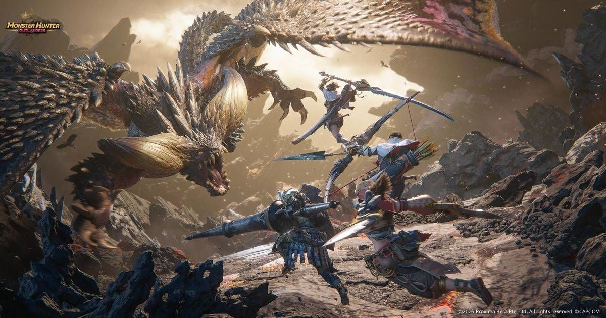

몬스터헌터 아웃랜더스 PC에서 하는 법, 공식 PC 버전 여부와 에뮬레이터 설치 방법 및 주의할 점은?
오늘 10월 29일 오전 7시에 몬스터헌터 아웃랜더스 한국 서버가 열렸는데요, PC로도 할 수 있는지 궁금해하는 분이 많을 것 같아요. 결론부터 말씀드리면 공식 PC 버전은 가레나 공식 FAQ와 보도자료에서 확인하지 못했고, PC로 하려면 안드로이드 에뮬레이터를 쓰는 길밖에 없습니다.
이 글은 2026년 10월 29일 출시 당일 기준인데요, 주인장이 직접 설치해 본 후기가 아니라 가레나 공식 FAQㆍ이용 규약과 에뮬레이터 제공사 안내를 정리한 내용이에요. 무기 티어표는 별도 글이라 여기서는 다루지 않아요.

보시면 화려한 전투 장면인데요, 이 화면을 PC로 볼 수 있는지가 오늘 글의 주제입니다.
이미지 출처: 가레나 보도자료 · 디스이즈게임 게재
1. 공식 PC 지원 여부
몬스터헌터 아웃랜더스의 공식 출시 플랫폼은 안드로이드와 iOS이고, PC 클라이언트는 공식 사이트ㆍFAQㆍ보도자료 어디에도 나와 있지 않습니다. 공식 홈페이지 하단의 다운로드 링크도 안드로이드용과 iOS용 두 개뿐이에요.
가레나 공식 FAQ의 오픈 안내는 "2026/10/29(목) 오전 07:00:00(UTC+9)에 안드로이드 및 iOS 플랫폼에서 동시 오픈"이라고 적고 있고 PC는 언급이 없어요. 같은 FAQ에 이런 한 줄도 있습니다.
"【몬스터헌터 아웃랜더스】는 모바일 기기에서 플레이할 수 있도록 개발되었으며, 모바일 기기가 아닌 다른 환경에서 이용 시 발생하는 문제에 대해서는 도움을 드리기 어렵습니다."
금지한다는 말이 아니라 지원하지 않는다는 말이거든요. 앞으로도 영영 없다는 뜻은 아니고 오늘 기준으로는 여기까지 알려져 있는데요, FAQ 말미에도 업데이트에 따라 일부 내용이 바뀔 수 있다고 적혀 있으니 참고해 주세요.
지금 보시는 문단처럼 FAQ에 모바일 기준이라는 설명이 그대로 적혀 있어요.
2. PC로 하는 방법, 에뮬레이터 하나
지금 확인되는 PC 실행 방법은 안드로이드 에뮬레이터 하나이고, 이건 공식이 아니라 비공식 방법입니다.
| 방법 | 상태 | 비고 |
|---|---|---|
| 공식 PC 클라이언트(스팀ㆍ가레나 PC 등) | 미확인 | 공식 발표 없음 |
| 구글 플레이 게임즈 PC | 미확인 | 지원 여부는 구글 플레이 게임즈 앱에서 직접 검색해 보세요 |
| 안드로이드 에뮬레이터 | 비공식 | 공식 지원 밖, 자기 책임 |
폰이 공식 최소 사양(Android 9ㆍRAM 4GBㆍ저장공간 19GB)을 채운다면 모바일로 하시는 게 나아요. 공식 FAQ가 모바일 밖 환경의 문제는 도움을 드리기 어렵다고 했거든요. 폰 사양이 모자라 PC를 알아보는 분이라면 그때 에뮬레이터를 고려해 보세요.
에뮬레이터는 BlueStacksㆍLDPlayerㆍMuMuPlayer가 아웃랜더스 PC 안내 페이지를 내놓았는데요, 세 곳 모두 에뮬레이터 회사의 홍보성 안내라는 점은 감안하세요.
구글 지원 게임 목록을 열지 못해 지원 근거도 반대 근거도 확인 못 함. 구글 플레이 게임즈 PC 앱의 지원 게임 검색에서 "몬스터헌터 아웃랜더스"를 직접 검색해 확인한 뒤 이 박스를 한 문장으로 교체(한국 지원 현황 포함).
3. 에뮬레이터 설치 순서, BlueStacks 안내 기준
BlueStacks 안내 기준으로는 에뮬레이터를 설치하고 구글 계정으로 로그인한 뒤, 플레이 스토어에서 게임을 받으면 됩니다.
- BlueStacks 아웃랜더스 페이지의 'Play Monster Hunter Outlanders on PC' 버튼을 눌러 파일을 받으세요.
- 받은 파일을 실행해 BlueStacks를 설치하고 실행하세요. 관리자 권한이 필요합니다.
- 구글 플레이 스토어에 로그인하세요.
- 스토어에서 몬스터헌터 아웃랜더스를 검색해 설치하세요.
- 실행한 뒤 서버와 로그인 방식을 확인하세요. 이 부분은 아래 5절에서 다시 짚습니다.
한국 구글 플레이 페이지 기준으로 패키지 이름은 com.tencent.mhadv, 개발자 표기는 Level Infinite예요. 이름이 비슷한 다른 앱을 받지 않게 검색 결과에서 이 표기를 꼭 확인하세요. 브라우저로 구글 플레이 페이지를 열면 주소 끝의 'id=' 뒤에 이 패키지 이름이 붙어 있어서 대조하기 쉽습니다.
이 화면처럼 스토어에서 개발자 표기까지 확인하고 설치하시면 됩니다.
4. 필요한 사양과 저장공간
에뮬레이터 안내 기준 최소 사양은 Windows 7 이상, RAM 4GB 이상, 여유 저장공간 10GB이고, 게임 자체는 공식 기준 안드로이드 최소 19GB가 따로 필요합니다. 이 밖에 관리자 권한과 최신 그래픽 드라이버도 갖추라고 안내하는데요, CPU는 Intel이나 AMD(맥은 Apple Silicon)를 쓰는 환경이어야 한다고 해요.
| 구분 | OS | RAM | 저장공간 | 기기 |
|---|---|---|---|---|
| 에뮬레이터 최소(BlueStacks 안내) | Windows 7 이상 | 4GB 이상 | 여유 10GB | 해당 없음 |
| 공식 안드로이드 최소 | Android 9 이상 | 4GB | 19GB | 갤럭시 S8 이상 |
| 공식 안드로이드 권장 | Android 12 이상 | 8GB | 22GB | 갤럭시 S23 이상 |
| 공식 iOS 최소 | iOS 15 이상 | 3GB | 18GB | iPhone 8 Plus 이상 |
| 공식 iOS 권장 | iOS 17 이상 | 6GB | 20GB | iPhone 13 Pro 이상 |
BlueStacks는 권장 사양을 따로 밝히지 않았어요. 10GB와 19GB를 단순히 더한 약 29GB는 주인장의 추정이니, 공간은 넉넉히 비워 두시길 권합니다. 모바일로 하실 분은 공식 FAQ 기준으로 10월 28일 낮 12시부터 사전 다운로드가 열려 있었는데요, 용량이 19GB 이상이라 와이파이 환경에서 받아 두는 편이 마음 편했을 거예요.
5. 계정과 서버, 조작에서 챙길 것
서버는 접속 지역에 따라 자동으로 정해지고 다른 서버로 계정을 옮길 수 없으니, 계정은 구글이나 가레나로 연동해 두세요.
서버는 대한민국/아시아·태평양/라틴아메리카/중동·아프리카 네 곳인데요, 다른 지역 서버와는 게임 정보가 공유되지 않고 지역 간 파티나 친구 추가도 안 됩니다.
계정은 안드로이드에서 구글ㆍ페이스북ㆍ가레나ㆍ게스트로 연동할 수 있고, iOS는 여기에 Apple이 더해져요. 게스트는 로그아웃ㆍ삭제ㆍ기기 변경 시 복구가 안 되니 피하시고, 다른 기기에서 로그인해 이어 하는 건 되지만 동시 접속은 안 됩니다.
조작은 BlueStacks가 키보드와 마우스가 터치보다 이동ㆍ카메라 조작을 부드럽게 해 줄 수 있다고만 안내하고, 구체적인 키 목록은 밝히지 않았어요.
지원 언어는 한국어를 포함해 9개이고, 게임 안 '설정' 메뉴의 '언어'에서 바꿀 수 있어요. 컨트롤러는 PocketGamer가 개발진이 완전 지원을 확인했다고 전했는데, 모바일 기기 기준 설명이라 에뮬레이터에서도 된다는 보장은 아닙니다.
에뮬레이터에서 한국 서버로 접속되는지와 결제 가능 여부는 확인 못 함(FAQ의 "접속 지역에 따라 자동 연결" 문장에서의 추론뿐). 기본 키 매핑도 3사 모두 구체값을 얻지 못함. 에뮬레이터 키 매핑 편집 창에서 이동ㆍ카메라ㆍ공격 배치를 직접 확인해 채우세요.
주인장은 이 게임을 〔폰으로만 / 에뮬레이터로만 / 둘 다〕 해 볼 생각입니다.
6. 약관과 제재, 에뮬레이터 명시 여부
가레나 이용 규약에 "에뮬레이터"라는 단어는 없지만, 제3자 도구ㆍ보안 탐지 우회ㆍ비공식 설치 파일은 제재 항목으로 적혀 있습니다.
- 핵ㆍ스크립트ㆍ마우스 매크로 같은 제3자 도구나 자동화 프로그램으로 부당한 이득을 얻는 행위
- 비공식 경로의 설치 파일, 변조 버전 또는 크랙 버전 클라이언트로 로그인하는 행위
- 보안 탐지를 고의로 우회하거나 감시를 회피하는 행위
이 목록이 전부는 아닙니다. 규약은 아래 항목에 한정되지 않는다고 밝히고, 일일이 열거하지 않았더라도 성격이 같거나 비슷한 행위는 운영팀이 이 안내에 준해 판단하고 조치할 수 있다고 적고 있어요. 목록에 에뮬레이터가 없다고 안전하다고 읽으시면 곤란합니다.
제재는 게임 이용 제한 1일에서 10년, 재화 회수까지 적혀 있고, 극히 악의적인 경우 법이 허용하는 범위에서 관련 기기도 차단할 수 있다고 해요. 보안 시스템은 실시간 탐지와 사후 검토를 함께 해서 소급 처리될 수도 있다고 합니다.
정리하면 에뮬레이터는 금지로 명시되진 않았지만 공식 지원 밖이고, 탐지나 제재 가능성은 공식이 밝히지 않았어요. PocketGamer는 에뮬레이터가 항상 매끄럽게 돌아가진 않을 수 있고 개발진이 계정을 제재할 수도 있다고 경고했는데, 이건 매체 의견이지 공식 입장은 아닙니다. 쓰신다면 키 매핑의 매크로ㆍ연타 자동화 기능은 켜지 마시고, 설치는 반드시 스토어로만 하세요.
출시 당일이라 에뮬레이터 사용으로 제재받은 사례는 찾지 못함. 며칠 뒤 가레나 공지ㆍ네이버 라운지ㆍ커뮤니티에서 사례가 올라오는지 확인해 이 박스를 교체(없으면 "아직 확인된 사례 없음 + 확인일"로).
보시는 것처럼 규약 목록에서 위 세 항목을 직접 확인하실 수 있어요.
참고한 곳
· 몬스터헌터 아웃랜더스 공식 FAQ(가레나 한국) (2026.10.29 기준)
· 몬스터헌터 아웃랜더스 이용 규약(가레나 한국)
· 에뮬레이터 안내 : BlueStacks 아웃랜더스 PC 가이드
· 에뮬레이터 안내 : PocketGamer 에뮬레이터ㆍ컨트롤러 정리